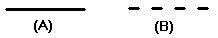

Example: formatting an existing drawing
You can use styles to make existing drawings conform to your company's standards. Suppose you receive a drawing from another company, and all the hidden lines are continuous (A). Your company standard indicates that hidden lines should be a line type that is dashed (B). You have been using a line style, called Hidden, to conform to the standards used by your company.

To change the hidden lines in the drawing quickly and efficiently, follow these steps:
-
Open the drawing that you received from the other company.
-
Select all the lines that you want to change.
-
On the command bar, select Hidden in the Style list box to change all the lines that you have selected.
All the lines now appear as dashed lines instead of continuous lines.
How do I
Create or modify a drawing view styleMap drawing view styles
Example: formatting a new drawing